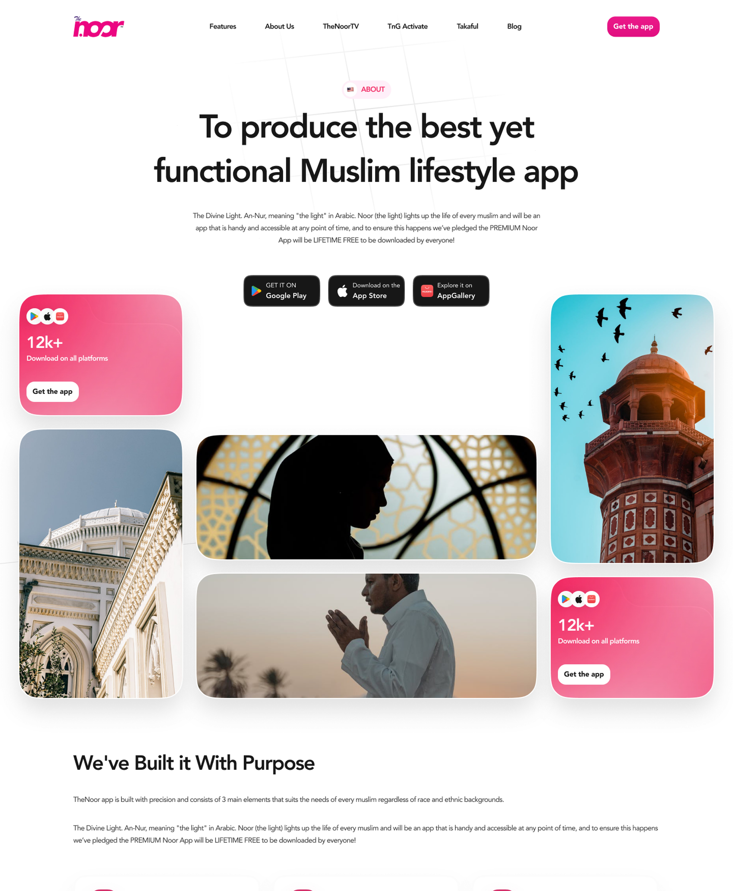
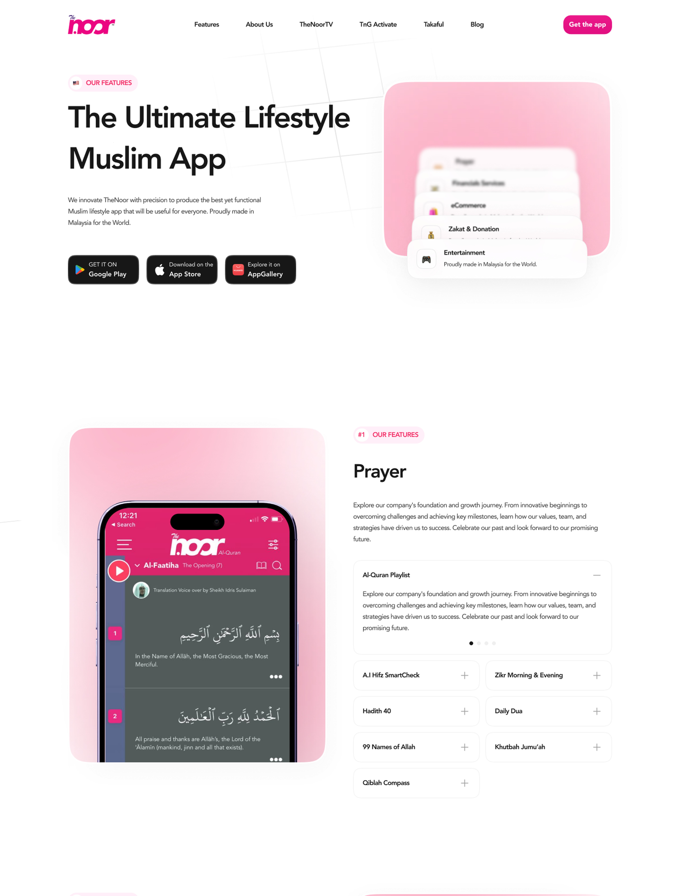
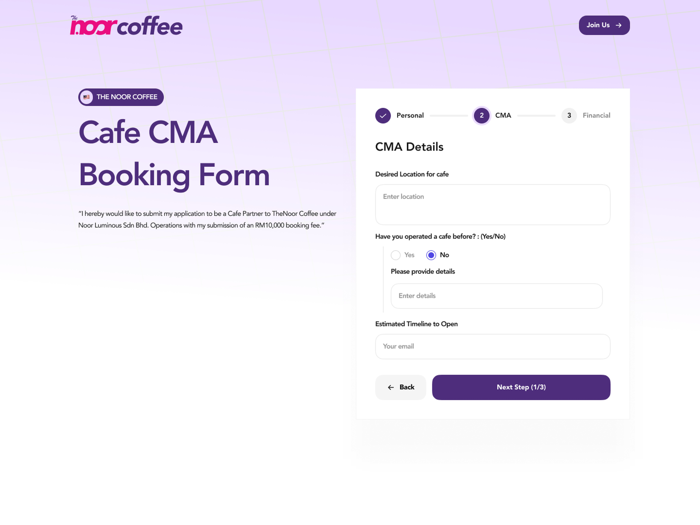
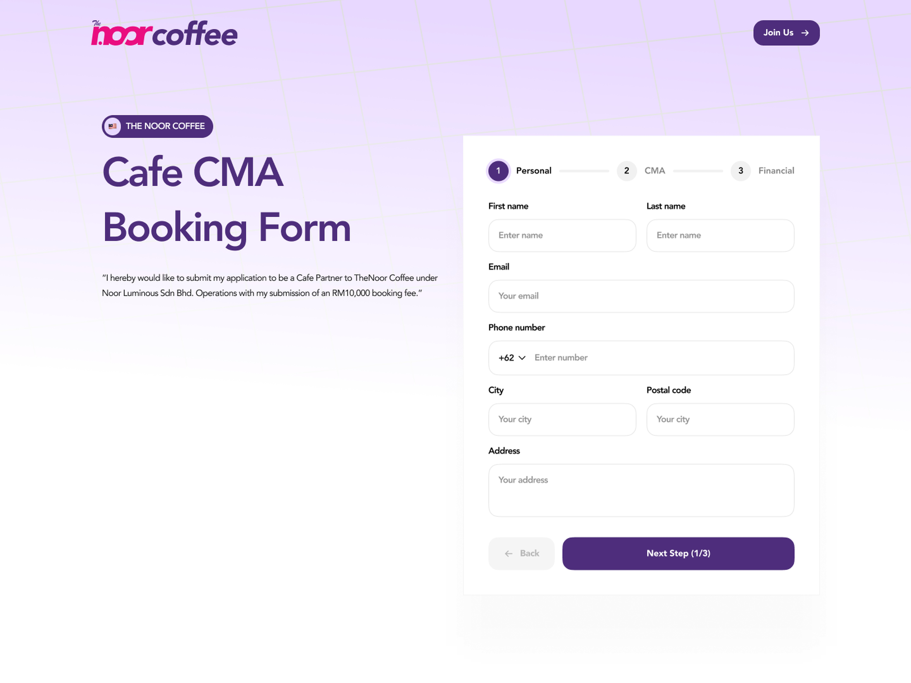

The public-facing marketing site for TheNoor, a Muslim lifestyle app, and NoorCoffee, a coffee franchise sub-brand under the same company, complete with its own cafe-partner application flow.
TheNoor's marketing site had to do the usual job, explain the app, list its features, sell the download, while also introducing something less usual: NoorCoffee, a cafe franchise sub-brand launched under the same company. Two audiences, two goals, one parent brand to keep them visually connected.


The Cafe Partner flow walks an applicant through personal details, then the franchise agreement itself, location, prior cafe experience, and an opening timeline, before moving on to payment, reusing the same card and stepper pattern throughout so a three-step form never feels like three different forms.


NoorCoffee could have easily read as an unrelated side project bolted onto TheNoor's site. Keeping the same card shapes, spacing, and button language across both, just recoloured, let NoorCoffee stand on its own as a franchise pitch while still feeling like it belonged to the same company a visitor had just read about.